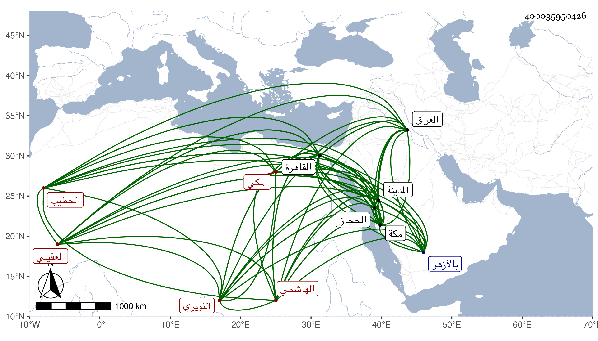

0902Sakhawi.DawLamic.ITO20230111-ara1.EIS1600.400035950426
Biography ID: 400035950426
482
أحمد بن محمد بن محمد بن أحمد بن أحمد بن محمد بن عبد العزيز بن القسم بن عبد الرحمن بن المحب أبي محمد بن أبي القسم بن أبي الفضل الهاشمي العقيلي النويري المكي الخطيب وابن الخطيب الشافعي سبط القتي بن فهد أمه أم هانئ . ولد في النصف الثاني من ليلة السبت سادس عشري رجب سنة خمس وثلاثين وثمانمائة بمكة ونشأ بها فقرأ القرآن وصلى به وقرأ في التنبيه وغيره وأحضر على محمد ابن علي الزمزمي والجمال محمد بن إبراهيم المرشدي والتقي المقرزي وحسن ابنة محمد الحافي وسمع على أبي المعالي الصالحي والزين شعر وأبي الفتح المراغي والزين الأميوطي وزينب ابنة اليافعي وطائفة منهم جده لأمه وأحضر في الرابعة على عبد الرحمن بن خليل القابوني تقريب العراق عني بسماعه له على مؤلفه وأجاز له خلق باستدعاء خاله النجم بن فهد واستقر في ربع الخطابة بالمسجد الحرام شريكا لأبيه وعمه وولده ثم استقر أولاده بها بعد أبيهم وطاف هذا أماكن كاليمن والروم والحبشية وغيرها وكذا دخل القاهرة غير مرة وخطب بالأزهر وكذا بغيرها من الأماكن التي دخلها كل ذلك للسحت كما أنه تزوج الضريرة ابنة سيدي الكبير مع تقدمها في السن طمعا في مالها وأتلف عليها بتبذيره وعدم تدبيره شيئا كثيرا إلى أن ماتت معه وبعده انكشف حاله جدا وطيف له على مثلها أو نحوها ليستتر بها فما تهيأ ولم يكن عمه يرضاه ، وعنده من الحمق ومزيد الجرءة والتساهل ما الله به عليم ، وحكى لي المظفر الأمشاطي وهو من أصدقاء أبيه وعمه أنه عرض له في صغره اختلال بحيث صار يتعلق بأذيال الكعبة وربما مزقها وجيء به حينئذ للشيخ سلام الله العالم الطبيب فقال بحسب ما أظنه هذا احتيال منه على التظالم من الكتاب ، قال الحاكي والذي ظهر لغيره بقرائن خلافه ولذا لوطف بالحقن ونحوها ومع ذلك فيظهر فيه بقايا مع تحامق سيما ويرتكب في خطبه ما لا يحمده عليه من له أدنى عقل بل ربما يؤدي إلى إبطالها ولا زال يترسل في ذلك إلى أن منع وأذن لإمام المقام في الخطابة وكان يتناوب هو وأولاده فيها وجر ذلك لمرافعته في عالم الحجاز فما تمكن بل منع من الوصول إلى القاهرة واختير له الإقامة بالمدينة النبوية فما كان بأسرع من سحبه منها في رمضان سنة اثنتين وتسعين وقد استلب في مجيئه ثم عاد إلى مكة في موسمها على وظيفة بعد أن خطب بالجامع الأزهر وتعرض لشيء مما أنكر عليه فوجد الجمالي أبا السعود صار رئيس الحجاز بعد موت والده وسلك معه ما اقتضته رياسته بمقابلته بالسلام والإكرام بل ساعده في تمشية ما رسم له بأخذه من مكان بباب شبيكة حتى بناه بيتا واستمر التودد الظاهر بينهما وترك جل ما كان يسلكه في خطبه ولا شك أن معاداة العاقل أسلم من مخالطة الأحمق والمداراة خير من المماراه والتمكن أحسن من التلون ، وقد تزوج كل من ولدين لابن عمه أبي بكر بن أبي الفضل بابنتين له كبيرتين وكانت حكايات والله يحسن العاقبة .
